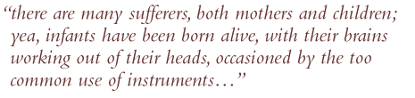

|
|
||||||||||||
| Sarah
Stone learned midwifery in Bristol from her mother, also a midwife. Sarah's
husband was probably an apothecary. She believed that midwives should learn
as much as possible about anatomy and other medical knowledge. Working in
London, she taught her daughter who carried on in her mother's footsteps.
 |
||||||||||||
Questions to ask these pages: 1. What does Stone tell us about her patients? 2. How did Stone feel about birth instruments?
Questions to ask the book: 1. Why did Stone
object to man-midwives? 2. According to Stone,
what advantages did she have over the man-midwives to whom she objected? |
Title Page | Page XIII | Page XIV | |||||||||||
|
|
||||||||||||||
|
||||||||||||||||||